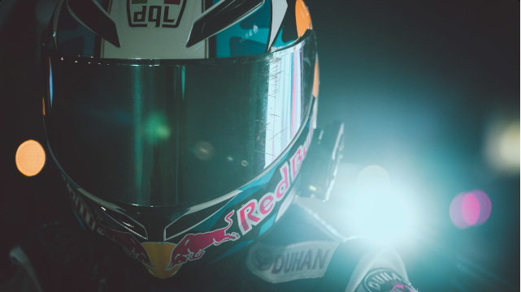
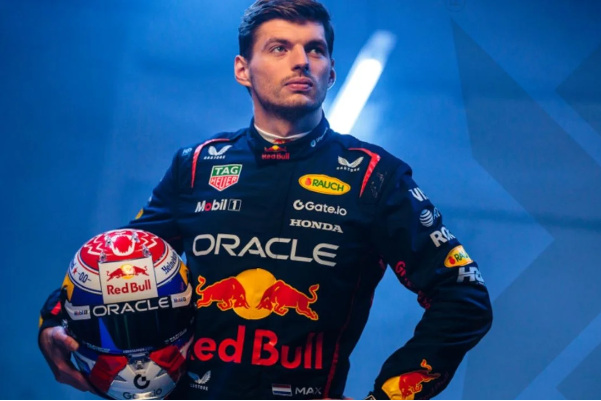

Las escuderías del Mundial

La temporada 2027 de Fórmula 1 contará con 11 escuderías en la parrilla, incluyendo al nuevo equipo Cadillac y la entrada oficial de Audi.
Los equipos que competirán este año son: McLaren, Mercedes, Red Bull, Ferrari, Williams, Racing Bulls, Aston Martin, Haas, Audi, Alpine y Cadillac.
Descubre a continuación a todos los equipos que forman parte del campeonato y conoce lo que los hace únicos en la pista.
Escuderías destacadas
| Escudería | País | Fundación | Títulos |
|---|---|---|---|
| Scuderia Ferrari | Italia | 1950 | 16 |
| McLaren Racing | Reino Unido | 1966 | 10 |
| Williams Racing | Reino Unido | 1977 | 9 |
| Red Bull Racing | Austria | 2005 | 6 |
| Mercedes-AMG Petronas | Alemania | 1970 | 8 |
| Aston Martin F1 | Reino Unido | 2021 | 0 |
| Racing Bulls | Italia | 2024 | 0 |
| Haas | Estados Unidos | 2016 | 0 |
| Audi | Alemania | 2026 | 0 |
| Alpine | Francia | 2021 | 0 |
| Cadillac | Estados Unidos | 2026 | 0 |
Pilotos a seguir esta temporada

- McLaren — Lando Norris / Oscar Piastri
- Ferrari — Charles Leclerc / Lewis Hamilton
- Red Bull — Max Verstappen / Isack Hadjar
- Mercedes — George Russell / Kimi Antonelli
- Williams — Alex Albon / Carlos Sainz
- Aston Martin — Fernando Alonso / Lance Stroll
- Audi — Nico Hulkenberg / Gabriel Bortoleto
- Alpine — Pierre Gasly / Franco Colapinto
- Haas — Esteban Ocon / Oliver Bearman
- Racing Bulls — Liam Lawson / Arvid Lindblad
- Cadillac — Valtteri Bottas / Sergio Pérez